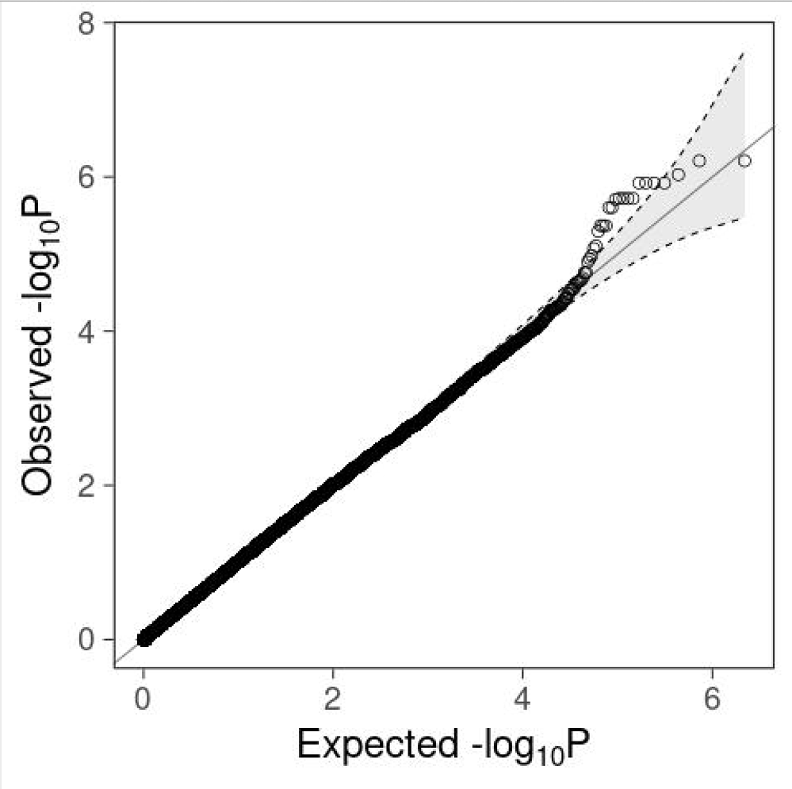
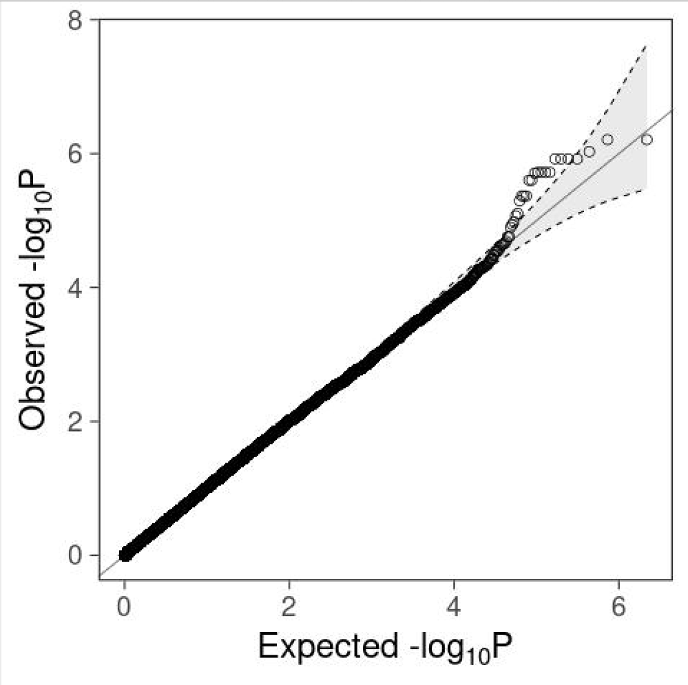

Performing Association Analyses¶
In this tutorial, you will learn how to use the HapMap files generated in the previous tutorial named: popstratout (with .bed, .bim, and .fam. extensions) and covar_pca.txt to perform association analysis on a simulated phenotype.
We only need to define a few variables for this section of the analysis¶
Before we start, we define two variable. FILE_GWAS refers to the dataset to perform the association analysis on and FILE_COV to the dataset with the relevant covariates (Principal components).
FILE_GWAS=popstratout
FILE_COV=covar_PCs.txtPerform Association Analyses:¶
We will use Plink to perform association analyses. These types of analyses run M individual regressions, with M the number of SNPs in the .bim file. For case/control data, the simples form of association analysis is performed using the --assoc flag. However, running multivariable regression analyses, one for each SNP, is an attractive way of estimating SNPs associations, correcting for a multitude of control variables. The --linear flag is used for linear regression (apropriate for quantitative traits and possibly binary traits), the --logistic flag for logistic regression (appropriate for binary traits). Below, we show how to perform each of these three types of association analyses on a binary, simulated phenotype (stored in the 6th column of the .fam file).
All these analyses are performed M times, for each SNP. As a result, conventional p-values need to be adjusted for multiple hypothesis testing. The --adjust flag performs this correction, and will add different types of multiple hypothesis corrected p-values to the output.
Note
the --assoc option does not allow to correct covariates such as principal components (PC's) MDS components, or other variables such as sex and age. We therefore do not recommend to use this type of anlysis, as results will be vulnerable to confounding by population stratification.
plink --bfile $FILE_GWAS --assoc --adjust --out assoc_resultsThe --logistic method performs logistic analysis and allows you to include covariates in your association analysis. We include sex as a covariate (which is recommended for many phenotypes), adding sex to the --logistic flag as shown below. Sex will be inferred from the .fam file. We will be using 10 principal components as covariates in this logistic analysis. We use the PCA components calculated from the previous tutorial: covar_PCA.txt. In that tutorial, we showed in the scree plot that the first two PCs should in principal be sufficient to control for population stratification. Nonetheless, we add the first 10 as this is considered the minimum in the literature and controlling for too many PCs is unlikely to have a large effect on the overall results (Price et al., 2006). We use the option hide-covar to only show the additive results of the SNPs in the output file.
```bash
plink --bfile $FILE_GWAS --covar $FILE_COV --logistic 'hide-covar' sex --adjust --out logistic_results
```
**Remove NA values, those might give problems generating plots in later steps.**
```bash
awk '!/'NA'/' logistic_results.assoc.logistic > logistic_results.assoc_2.logistic
```
In case of a quantitative outcome measure the option --logistic should be replaced by --linear as to perform linear regression analysis. The use of the --assoc option is also possible for quantitative outcome measures (as metioned previously, this option does not allow the use of covariates).
Account for Multiple testing¶
There are various way to deal with multiple testing outside of the conventional genome-wide significance threshold of 5.0E-8, below we present a couple:
adjust¶
plink --bfile $FILE_GWAS -assoc --adjust --out adjusted_assoc_results
grep -oP '(?<==).*' adjusted_assoc_results.log >test.txt
sed 's/\.$//' test.txt >lambda.txtWarning
This is a computational intensive step. Further pros and cons of this method, which can be used for association and dealing with multiple testing, are described in our article corresponding to this tutorial (https://www.ncbi.nlm.nih.gov/pubmed/29484742).To reduce computational time, we only perform this test on a subset of the SNPs from chromosome 22. The EMP2 column provides the values for multiple testing corrected p-value.
# Perform 1000000 permutations.
plink --bfile $FILE_GWAS --assoc --mperm 1000000 --out 1M_perm_result
# Order your data, from lowest to highest p-value.
sort -gk 4 1M_perm_result.assoc.mperm > sorted_subset.txt
# Check ordered permutation results
head sorted_subset.txtlist.of.packages <- c("karyoploteR")
new.packages <- list.of.packages[!(list.of.packages %in% installed.packages()[,"Package"])]
if(length(new.packages)) install.packages(new.packages)
library("karyoploteR")
results_log <- read.table("logistic_results.assoc_2.logistic", head=TRUE)
results_as <- read.table("assoc_results.assoc", head=TRUE)
results_log=data.frame(results_log)
results_as=data.frame(results_as)
results_log$CHR <- sub("^", "chr", results_log$CHR ) ## addchr to column
results_as$CHR <- sub("^", "chr",results_as$CHR )
results_log=makeGRangesFromDataFrame(results_log,keep.extra.columns=TRUE,ignore.strand=TRUE,seqinfo=NULL,seqnames.field=c("seqnames", "seqname","chromosome", "chrom","chr", "chromosome_name","seqid"),start.field="BP",end.field=c("BP", "stop"),strand.field="strand",starts.in.df.are.0based=FALSE)
results_as=makeGRangesFromDataFrame(results_as,keep.extra.columns=TRUE,ignore.strand=TRUE,seqinfo=NULL,seqnames.field=c("seqnames", "seqname","chromosome", "chrom","chr", "chromosome_name","seqid"),start.field="BP",end.field=c("BP", "stop"),strand.field="strand",starts.in.df.are.0based=FALSE)
jpeg("manhattan.jpeg",width=800)
kp <- plotKaryotype(plot.type=4, chromosomes=c("chr1", "chr2","chr3" ,"chr4","chr5","chr6","chr7","chr8","chr9","chr10","chr11","chr12","chr13","chr14","chr15","chr16","chr17","chr18","chr19","chr20","chr21","chr22"),labels.plotter = NULL)
kpAddChromosomeNames(kp,srt=45)
kpAddLabels(kp, labels = "results_as", srt=90, pos=3, r0=autotrack(1,2))
kp <- kpPlotManhattan(kp, data=results_as,points.col = "2blues", r0=autotrack(1,2))
kpAddLabels(kp, labels = "results_log", srt=90, pos=3, r0=autotrack(2,2))
kp <- kpPlotManhattan(kp, data=results_log,points.col = "2blues", r0=autotrack(2,2))
dev.off()list.of.packages <- c("ggplot2")
new.packages <- list.of.packages[!(list.of.packages %in% installed.packages()[,"Package"])]
if(length(new.packages)) install.packages(new.packages)
library(ggplot2)
inflation=read.table("lambda.txt")
inflation=inflation$V1
rs_log <- read.table("logistic_results.assoc_2.logistic", head=TRUE)
rs_as <- read.table("assoc_results.assoc", head=TRUE)
###function for plotting with 95% confidence interval
gg_qqplot <- function(ps, ci = 0.95) {
n <- length(ps)
df <- data.frame(
observed = -log10(sort(ps)),
expected = -log10(ppoints(n)),
clower = -log10(qbeta(p = (1 - ci) / 2, shape1 = 1:n, shape2 = n:1)),
cupper = -log10(qbeta(p = (1 + ci) / 2, shape1 = 1:n, shape2 = n:1))
)
log10Pe <- expression(paste("Expected -log"[10], plain(P)))
log10Po <- expression(paste("Observed -log"[10], plain(P)))
ggplot(df) +
geom_ribbon(
mapping = aes(x = expected, ymin = clower, ymax = cupper),
alpha = 0.1
) +
geom_point(aes(expected, observed), shape = 1, size = 3) +
geom_abline(intercept = 0, slope = 1, alpha = 0.5) +
geom_line(aes(expected, cupper), linetype = 2, size = 0.5) +
geom_line(aes(expected, clower), linetype = 2, size = 0.5) +
xlab(log10Pe) +
ylab(log10Po)
}
##Run-->
jpeg("QQ-Plot_logistic_COVAR.jpeg")
gg_qqplot(rs_log$P) +
theme_bw(base_size = 24) +
annotate(
geom = "text",
x = -Inf,
y = Inf,
hjust = -0.15,
vjust = 1 + 0.15 * 3,
label = sprintf("λ = %.2f", inflation),
size = 8
) +
theme(
axis.ticks = element_line(size = 0.5),
panel.grid = element_blank()
# panel.grid = element_line(size = 0.5, color = "grey80")
)
dev.off()
jpeg("QQ-Plot_assoc.jpeg")
gg_qqplot(rs_as$P) +
theme_bw(base_size = 24)+
theme(axis.ticks = element_line(size = 0.5),
panel.grid = element_blank())
dev.off() 
